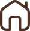

ONG Focinho Feliz
A Focinho Feliz é uma ONG dedicada a transformar a vida de animais em situação de abandono, conectando cães e gatos a famílias que possam oferecer amor, cuidado e um novo lar. Nosso objetivo é incentivar a adoção responsável, promover o bem-estar animal e mostrar que cada adoção é uma nova chance de felicidade.
(11) 98877-6655
Belo Horizonte - MG
Ruffe
Sobre o Ruffe
Dobermann dócil, demanda bastante espaço e caminhadas diárias. Brincalhão, deve se alimentar com ração para cães de grande porte, como a Pitucão XG.